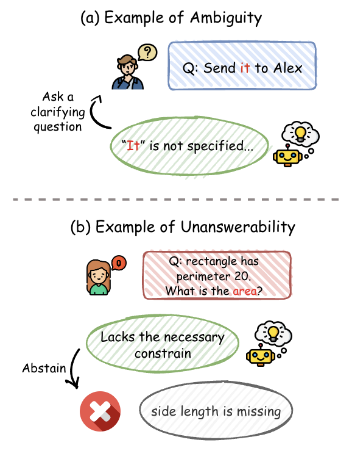

Abstract
Large language models tuned with reinforcement learning and verifiable rewards are incentivized to always answer, even when the prompt is underspecified or outside of the model’s knowledge boundary, which amplifies hallucinations. We propose Don’t Guess, a post-training recipe that mixes answerable and unanswerable queries, rewards explicit abstention via I don't know., and requires a concise clarification or explanation that is checked by an LLM-as-judge. By aligning incentives around calibrated refusals and actionable follow-up prompts, we aim to reduce hallucination rate, improve trustworthiness, and lower wasted computation on ill-posed questions.
Teaser Figure

Ambiguity vs. Unanswerability
Ambiguity stems from incomplete semantics (e.g., “Send it to Alex”), while unanswerability stems from complete semantics that nonetheless lack sufficient constraints (e.g., a rectangle with perimeter 20 but no side lengths). Both should trigger interaction, but only the latter merits a firm abstention.
Introduction / Background / Motivation
What did you try to do? What problem did you try to solve? Articulate your objectives using absolutely no jargon.
We want large language models to say “I don’t know” when a question is impossible to answer safely, and to follow up with a short request that explains what information is missing. The objective is a tutor-like agent that knows when to stop guessing and instead guides the user toward a resolvable version of the task.
How is it done today, and what are the limits of current practice?
Modern instruction tuning and RL with verifiable rewards (RLVR) reward models for delivering an answer, so the easiest way to get a high reward is to always respond even when the prompt is underspecified, outside the model’s knowledge, or built on a false premise. Recent studies (Kalai et al., 2025; Kirichenko et al., 2025; Yao et al., 2025) show this causes more hallucinations and worse calibration than instruction-only baselines.
Who cares? If you are successful, what difference will it make?
Reliable abstention improves the usability of reasoning agents, reduces wasted tokens on fabricated answers, and keeps downstream decision makers from acting on incorrect information. Well-calibrated clarifications are also easier to audit, which benefits safety reviewers and researchers working on high-stakes domains.
Approach
What did you do exactly? How did you solve the problem? Why did you think it would be successful? Is anything new in your approach?
We curate paired answerable and unanswerable queries by filtering AbstentionBench and related datasets (Song et al., 2025; Wang et al., 2025; Zhang et al., 2025) and then auto-annotate each unanswerable sample with the clarifying question or explanation it should elicit. The RLVR objective mixes both query types: answerable items receive a rule-based reward for correctness, while unanswerable items only reward the policy when it both outputs I don't know. and produces the expected clarification as judged by a specialist LLM. This simple, verifiable contract targets calibrated behavior without supervising intermediate reasoning steps.
Midterm Progress Check
1. Project Progress & Preliminary Results
1.1 Data Construction Progress
Research gap: No public dataset simultaneously covers our four essentials (paired answerable/unanswerable queries, explicit refusals, explanation of the missing information, and awareness of knowledge boundaries), so we curated new cross-domain data to fill that hole.
Cross-domain test set: We down-sampled AbstentionBench, cleaning roughly 100 samples per domain with an o3-mini-assisted pipeline, and ended up with ~1,800 QA pairs dedicated to evaluating boundary awareness.
Training set: We rely on existing reasoning/knowledge datasets and their officially released unanswerable variants (DeepScaleR, MMLU-Math, GPQA-Diamond, GSM8K, etc.) to avoid injecting extra noise by rewriting prompts.
Overall plan: Train on stable, previously vetted unanswerable data, then probe generalized refusal behavior on our cleaned cross-domain split to decouple “learning to refuse” from “handling unseen domains.”
1.2 Experimental Setup & Metrics
We currently test on the SUM math benchmark (DeepScaleR’s unanswerable extension) and evaluate DeepSeek-R1, Qwen2.5-7B-Instruct, and Qwen2.5-3B-Instruct with four shared metrics:
- Accuracy on answerable questions
- False refusals / incorrect “I don’t know” on answerable questions
- Correct refusal rate on unanswerable questions
- Unanswerable questions with a correct refusal and explanation
1.3 Key Findings
| Model |
Answerable Accuracy |
Answerable False Refusal |
Unanswerable Correct Refusal |
Unanswerable w/ Correct Explanation |
| DeepSeek-R1 |
99.3% |
0.4% |
21.5% |
18.4% |
| Qwen2.5-7B-Instruct |
75.4% |
16.9% |
20.4% |
18.5% |
| Qwen2.5-3B-Instruct |
43.8% |
6.7% |
15.1% |
13.7% |
Table 2. Midterm evaluation on SUM unanswerable split.
Compared with SUM baseline numbers: The SUM paper reports only ~11% refusal rate for Qwen2.5-7B, whereas our prompt + evaluation pipeline yields ~18.5% correct “explain-and-refuse,” showing that enforcing explanation raises the bar beyond binary abstention.
Overall observations: Model scale and training depth dominate answerable accuracy (3B ≪ 7B < DeepSeek-R1). Even strong reasoning models still refuse only ~20% of unanswerable questions, so boundary awareness remains weak.
2. Current Issues & Limitations
- LLM-as-Judge noise: Offline o3-mini decides both “did it refuse?” and “did it cite the real missing condition?” so any judge errors directly add variance to our metrics.
- Evaluation mismatch vs. SUM: The SUM paper mostly checks for literal
I don't know strings, whereas we pass the full response through a judge for semantic scoring, so numbers are not apples-to-apples.
- String matching fails to detect true refusals: Smaller models often say “I don’t know” and then hallucinate an answer; judge-based semantic checks are required, which reintroduces the noise above.
- Output formatting is underspecified: Reasoning and answers are interleaved, making auto-evaluation hard; we plan to enforce templates like
Reasoning: / Answer: to simplify parsing.
- Cross-domain data cleaning is expensive: AbstentionBench domains are large and heterogeneous; even with LLM+rule pipelines we still need targeted manual inspection to ensure quality.
Results
How did you measure success? What experiments were used? What were the results, both quantitative and qualitative? Did you succeed? Did you fail? Why?
Nemo enim ipsam voluptatem quia voluptas sit aspernatur aut odit aut fugit, sed quia consequuntur magni dolores eos qui ratione voluptatem sequi nesciunt.
| Experiment |
1 |
2 |
3 |
| Sentence |
Example 1 |
Example 2 |
Example 3 |
| Errors |
error A, error B, error C |
error C |
error B |
Table 1. This is Table 1's caption
Conclustion and Future Work
How easily are your results able to be reproduced by others?
Did your dataset or annotation affect other people's choice of research or development projects to undertake?
Does your work have potential harm or risk to our society? What kinds? If so, how can you address them?
What limitations does your model have? How can you extend your work for future research?